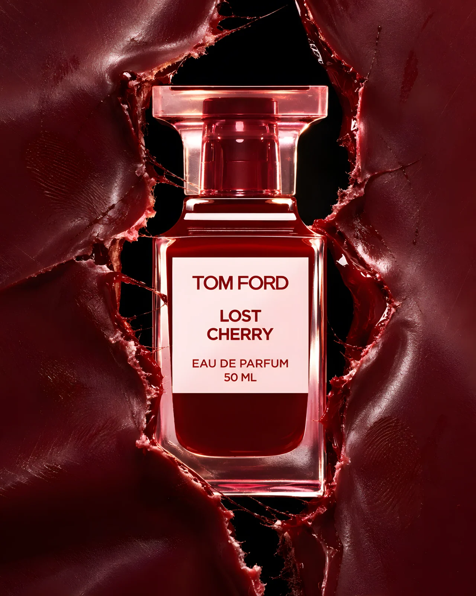
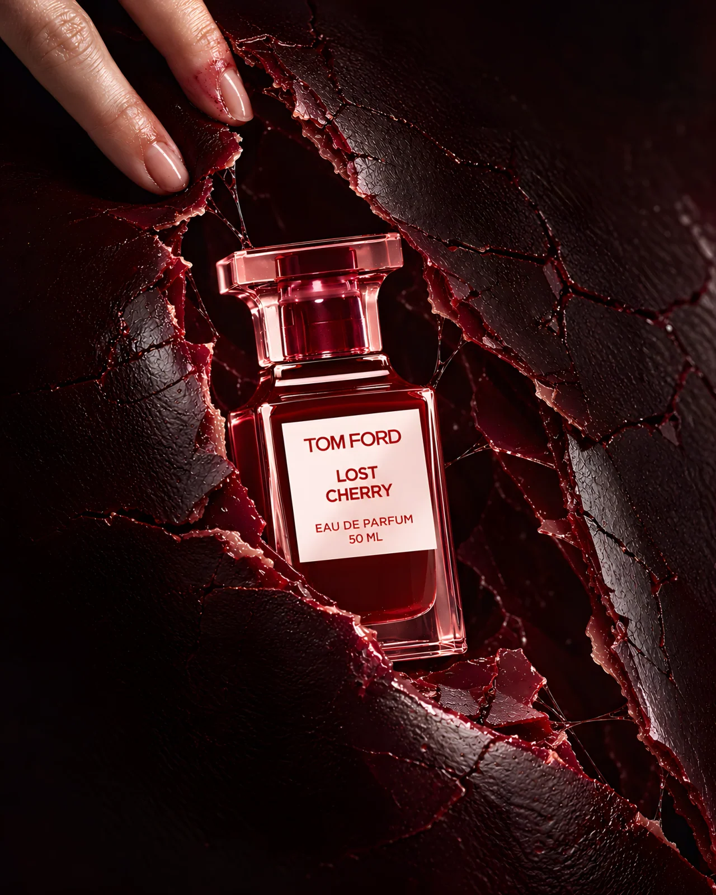

AFTER THE BITE
Tom Ford Lost Cherry, discovered beneath a broken skin of lacquer.

The idea
The first image holds the bottle within a rough rupture. In the second, stained fingertips peel back the fractured surface. One gesture replaces the familiar fruit-and-smoke imagery with the charged feeling of discovering something forbidden.
Making the world
Black-cherry lacquer, thin wax fractures and rose-tinted glass carry the tension. The official 50 ml bottle was used as a visual reference, but the product area remains AI-rendered rather than a pixel-faithful composite. Both 4K-class masters were enhanced from smaller generations; exact packaging typography needs review before commercial use.
The series
